A side table rarely gets the same design attention as a coffee table or a dining table, but it does just as much to finish a room. It's small enough that even a modest styling effort shows, and flexible enough to carry books, a lamp, a plant, or a single meaningful object without looking overdone.
Most of the ideas here come down to a handful of repeatable habits: pick one focal point, layer in a bit of genuine texture, and leave some space for the eye to actually rest. Done well, it looks effortless, even when it really isn't.

19 Side Table Decor Ideas
1. Negative Space as a Design Choice
Sometimes the best decor decision is simply less decor.
Intentionally leaving part of a side table empty gives whatever is on it room to actually stand out, rather than competing with everything else nearby.
A table that isn't trying to fill every available inch often reads as more confident and more considered than one that is.
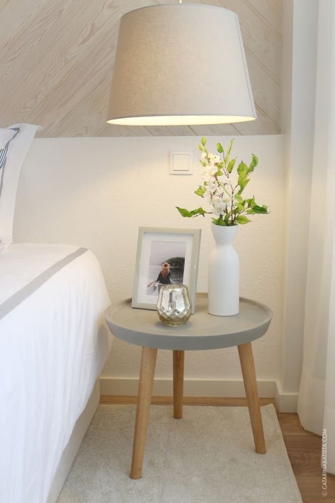
2. Seasonal Swaps for Easy Refreshes
Side table decor doesn't need a full overhaul every few months to feel current, swapping just one or two pieces is usually enough.
Warmer tones in the fall, lighter materials in the spring, a different candle color or a seasonal bloom are all easy, low-effort updates.
This keeps the table feeling fresh throughout the year without redecorating the whole room every time the season changes.

3. Symmetry When You Want Calm
Symmetry creates a genuine sense of balance, which makes it especially effective for a more formal space.
Matching side tables, each styled with the same or a very similar arrangement, works particularly well flanking a sofa or a bed.
Used thoughtfully, symmetry reads as calm and grounded rather than stiff, a good fit for a bedroom or living room that's meant to feel settled rather than eclectic.
4. Layered Textures for Depth
Texture does more visual work on a side table than color usually gets credit for.
Mixing smooth with rough, matte with glossy, and soft with solid keeps the eye moving across the table rather than settling on one flat surface.
A ceramic vase set next to a woven coaster is a simple example of how much contrast alone can add, without needing to change the color palette at all.
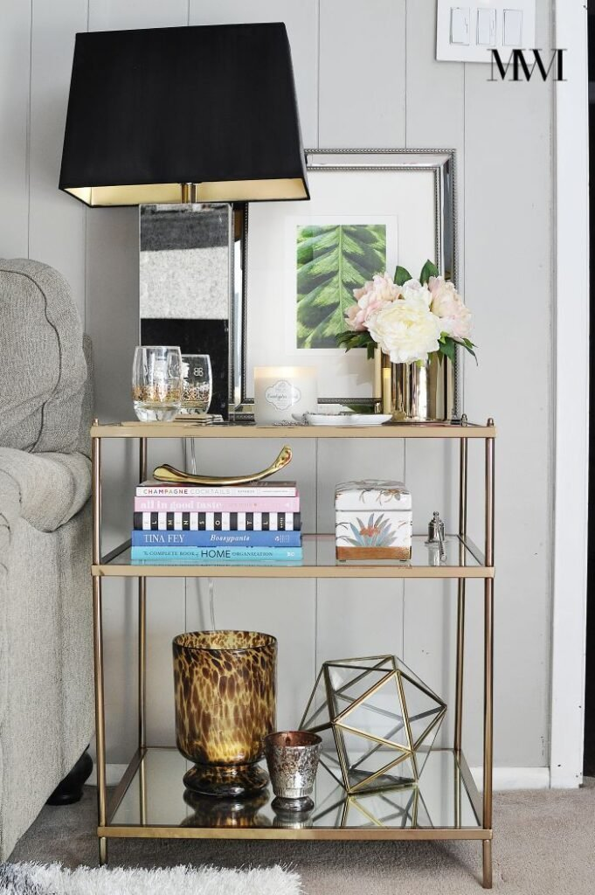
5. Decorative Bowls That Balance Style and Function
A bowl does double duty on a side table, it looks good sitting there, and it quietly holds small items like keys, rings, or a remote.
A bowl with some texture, wood, ceramic, or stone, tends to add more visual depth than a plain glass or metal one.
It's a small, practical addition that rarely draws attention to itself, which is exactly what makes it work so well alongside everything else on the table.
6. Framed Art Leaned Casually
Not every piece of art needs to go on the wall. Leaning a framed piece on a side table adds personality without any real commitment.
It's a particularly good approach for a rental, or for anyone who likes the flexibility of being able to rearrange things without patching a single nail hole.
A black-and-white print tends to work especially well leaned this way, since it reads as intentional rather than like art that simply hasn't been hung yet.
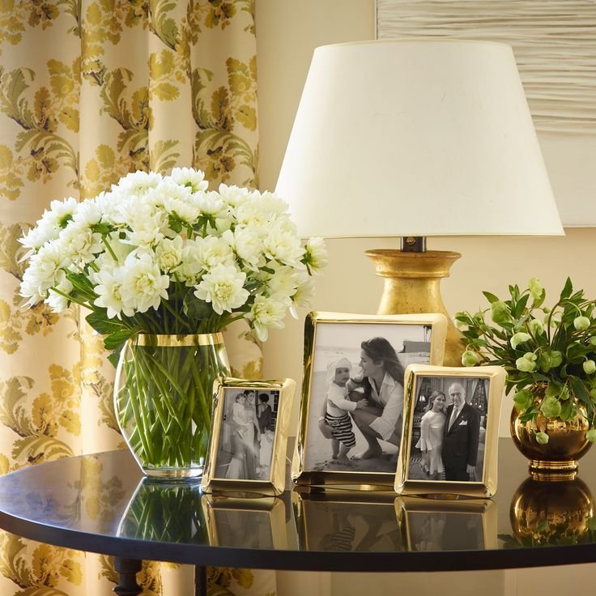
7. Natural Elements Like Stone or Wood
Natural elements ground a space in a way that purely manufactured objects can't quite replicate.
A small stone object or a wooden accent, a stone paperweight, a strand of wooden beads, a small piece of driftwood, adds texture almost instantly.
Leaning toward slightly imperfect, organic pieces tends to feel warmer than something too smooth or too polished.
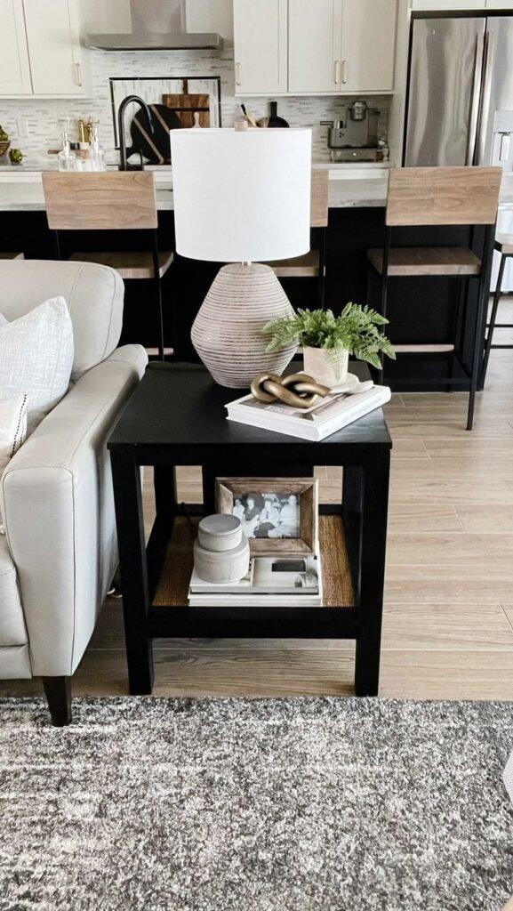
8. Mixed Materials for Visual Depth
Mixing materials keeps a side table visually interesting in a way that matching everything rarely achieves, wood with metal, glass with stone, ceramic with fabric.
A wood table paired with metal decor, a glass table with ceramic pieces, or a stone table with soft textiles are all easy starting pairings.
Avoiding a perfectly matched set is the real trick here, too much uniformity can feel stiff, while a little contrast gives the table real charm.
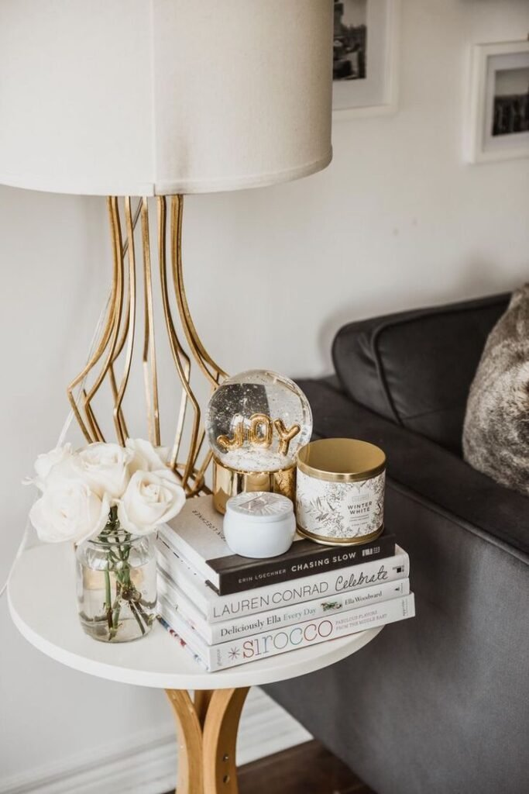
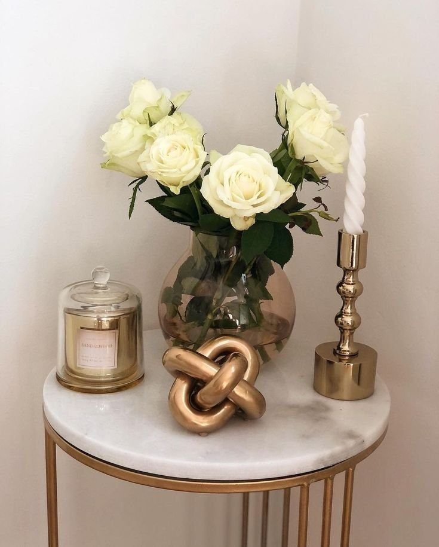
9. Candles for Warmth and Atmosphere
Candles add instant warmth to a side table, and they work equally well lit or simply sitting there unlit during the day.
Unscented candles tend to suit a shared living space better than a strongly scented one, since a bold fragrance can divide opinions fast in a room everyone uses.
Varying the heights if using more than one, and sticking to a neutral color, keeps the grouping looking polished rather than random.
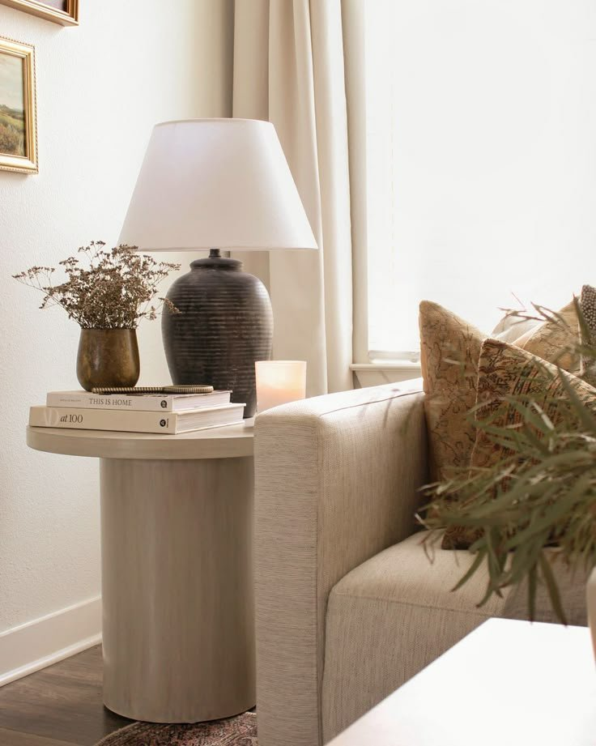
10. Personal Objects That Tell a Story
This is where a side table starts to feel like it actually belongs to someone.
A small framed photo, a travel souvenir, or a handmade piece adds real personality, as long as it stays fairly subtle, one personal item per table reads as intentional, where ten starts to feel cluttered.
Keeping it to a single meaningful piece lets that object actually stand out instead of getting lost among everything else.

11. Sculptural Objects That Add Interest
A sculptural piece functions like miniature art, adding personality to a table without needing any explanation.
Objects with real texture, curves, or an unusual shape, a ceramic knot, a stone loop, an abstract figure, tend to hold interest better than something flat or purely decorative.
One well-chosen sculptural object often does more for a table's personality than several smaller, less distinctive pieces combined.
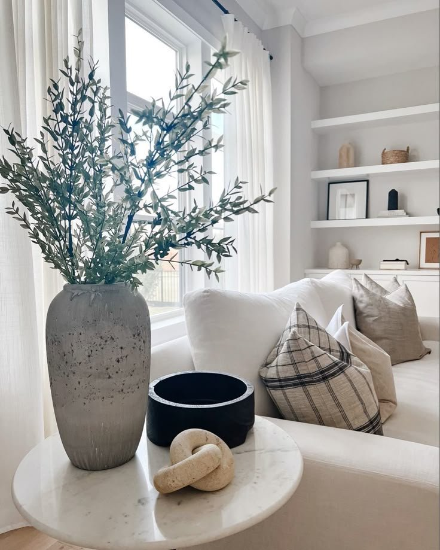
12. Stacked Boxes for Hidden Storage and Style
Decorative boxes keep a side table from turning into a catch-all for remotes, chargers, and the other small clutter of daily life.
They give those items somewhere to live within arm's reach, without leaving them visible on top of the table.
A box in leather, fabric, or wood tends to look more polished than one that's purely plastic or purely functional in appearance.
13. Small Plants for a Fresh, Lived-In Look
Plants bring real life into a space, and even a realistic faux version does the job just as well as a live one.
A small potted plant or a bit of trailing greenery softens the hard edges of a side table and adds a sense of movement that purely decorative objects can't.
It's an easy way to keep a table from feeling static, especially in a room that otherwise leans heavily on hard surfaces and straight lines.
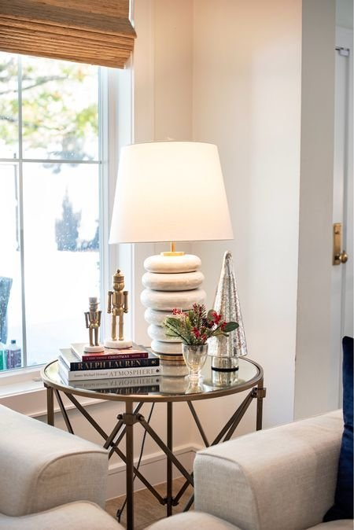
14. Accent Coasters That Feel Intentional
Coasters matter more than most people give them credit for, nothing undercuts a styled table faster than a mismatched set tossed on top.
Choosing coasters that fit the table's existing palette, stone, marble, leather, or a woven material, keeps them looking elevated rather than like an afterthought.
It's a small detail, but it's often exactly the kind of detail that separates a table that was actually styled from one that just happened.
15. Decorative Trays That Create Order
A tray acts like a visual container, grouping smaller items together and keeping a busy side table from looking cluttered.
It's especially useful when several small objects need to share the same table, the tray signals to the eye that the grouping is intentional rather than accidental.
Sticking to one tray per table, with the contents kept fairly minimal, keeps the whole arrangement feeling organized instead of crowded.
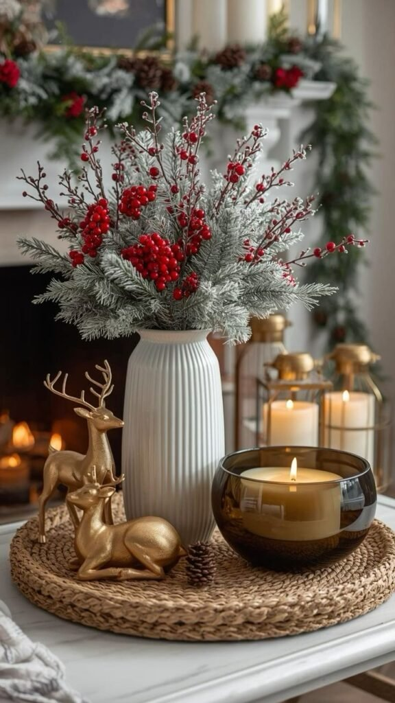
16. A Small Clock That Feels Decorative
A clock doesn't have to feel old-fashioned to belong on a side table.
A small, modern clock adds a bit of charm while still being genuinely useful, especially on a bedside or reading-area side table where checking the time matters.
Placed among a few framed photos or a small lamp, it blends into the rest of the styling rather than standing out as purely functional.
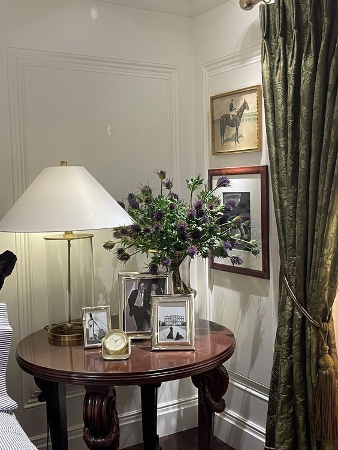
17. Layered Books With Personality
Books are one of the most reliable side table additions there is, they add height, texture, and personality almost instantly.
Hardcovers with neutral spines or muted colors tend to layer best. Stacking two or three, then topping them with a small object, a candle, a sculptural piece, even a small bowl, finishes the look.
The stack doesn't need to be perfectly even, either; a slightly uneven lean usually reads as more natural than a perfectly squared pile.
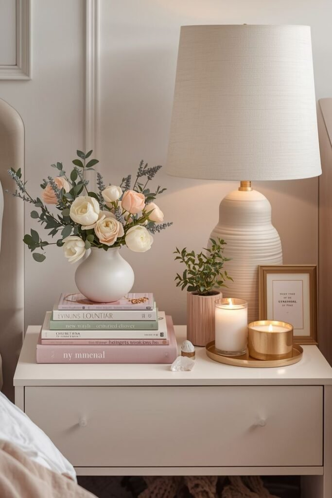
18. Florals That Feel Natural, Not Forced
Fresh flowers almost always elevate a side table, but only when they feel effortless rather than arranged.
A single stem or a loose, slightly undone arrangement tends to work better than a large bouquet, which can block sightlines and feel overly formal for a side table's scale.
Faux florals hold up just as well, as long as they look realistic rather than shiny or stiff, one type of flower in a simple vase, with the stems given room to breathe, is usually enough.
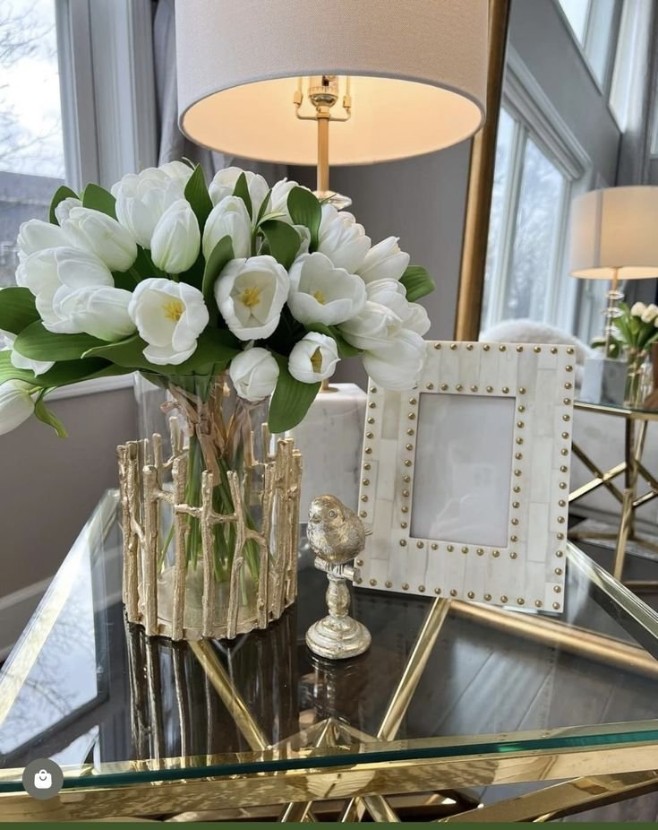
19. A Statement Table Lamp That Anchors the Space
Lighting changes the whole feel of a side table, and a table lamp makes the space feel intentional rather than bare.
Choosing a lamp that contrasts the table's own material tends to look more considered than matching everything, a ceramic or metal lamp on a wood table, or a fabric or glass one on a metal table.
A shade that fully hides the bulb, kept roughly proportional to the nearby seating, lets the lamp read as the tallest element on the table without overwhelming it.

The One Styling Rule Worth Remembering
Most well-styled side tables follow a loose version of the same formula: one tall element, one object with texture, and one small personal or sculptural piece. Height, texture, and personality, each represented once, is usually enough, adding a fourth or fifth category is where a table starts tipping into clutter.
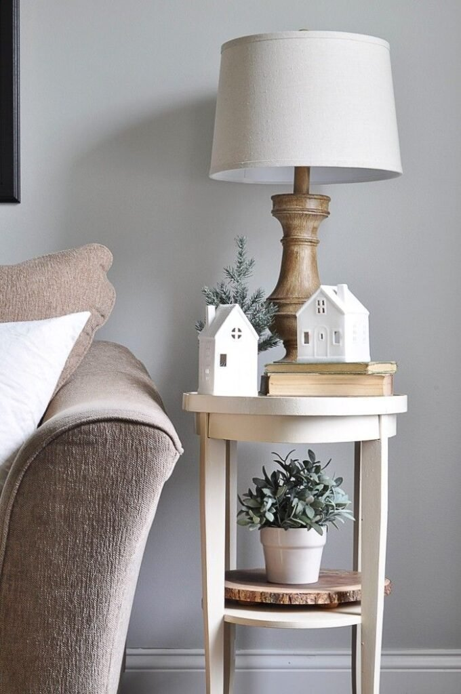
Choosing the Right Base
The table itself sets the tone for everything placed on top of it. A glass or metal table leans modern and benefits from a bit of softening, fabric, greenery, something organic. A wood or vintage table already carries warmth, which leaves more room to play with contrast through sculptural or metallic pieces.
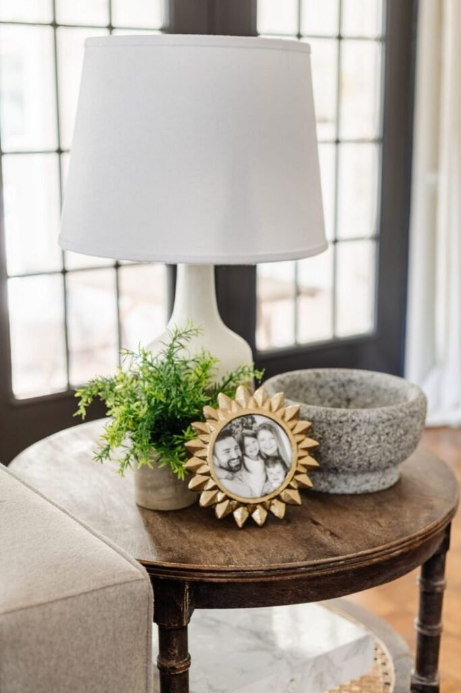
Final Thoughts
None of these nineteen ideas require buying an entirely new side table to make a real difference. A stack of books, one good lamp, and a little restraint around how much actually makes it onto the surface will carry most of the look.
The tables that end up looking the most "designed" are usually the ones with the least amount of stuff actually sitting on them, a reminder that a side table rewards careful editing just as much as it rewards decorating.